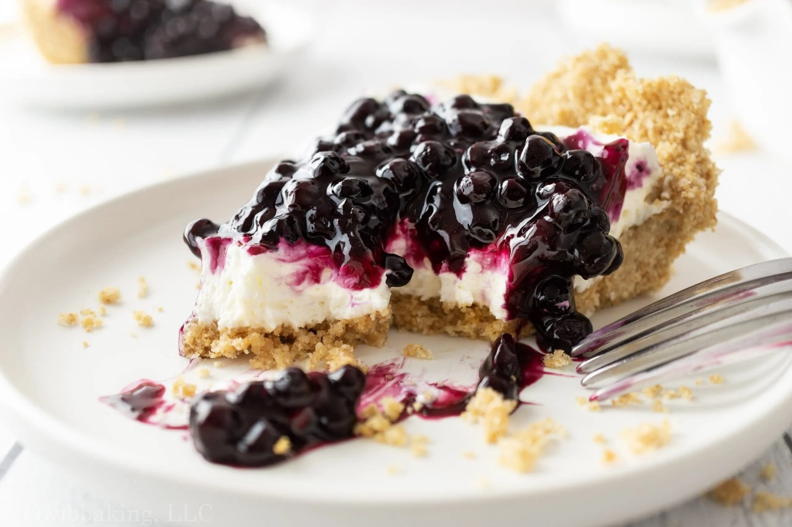

Preheat the oven to 300 degrees F (150 degrees C).
Mix flour, pecans, and butter in a bowl. Press dough into a 9x13-inch baking dish to form a crust.
Bake in preheated oven until golden brown, about 30 minutes. Allow crust to cool completely.
Meanwhile, heat blueberries, sugar, cornstarch, and 1 teaspoon lemon juice in a saucepan over medium heat until berries burst and juice thickens, about 10 minutes. Allow blueberry sauce to cool completely.
Beat cream cheese until fluffy. Add sweetened condensed milk and blend well. Stir in 1/3 cup lemon juice. Pour cream cheese filling into cooled crust and spread blueberry sauce over cream cheese. Chill in refrigerator for at least 2 hours before serving.